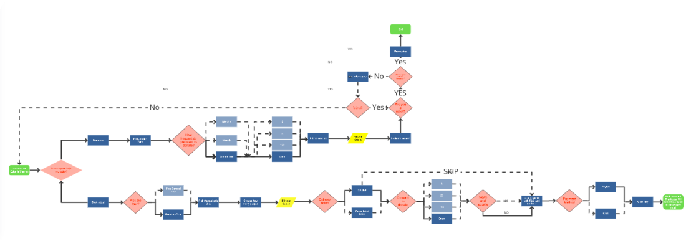
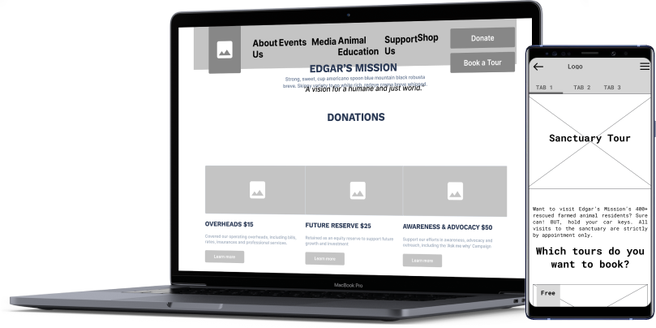

UX/UI CASE STUDY
Edgar’s Mission is a not for profit sanctuary for rescued farmed animals that seeks to create a humane and just world for humans and non-humans. Our initial impressions of the site were.

Edgar’s Mission is a not for profit sanctuary for rescued farmed animals that seeks to create a humane and just world for humans and non-humans. Our initial impressions of the site were.

As a group of three we all love animals, they’re near and dear to our hearts. We’re all from Victoria and we found that supporting a small state NFP would be ideal for us. Design wise we chose Edgar’s mainly because of the potential we saw in the website, most of the content is there, however design wise it can use a bit of a shuffling that we are all looking forward to redesign.
During our heuristic evalution, we think the current Edgar Mission website feel cluttered and there is too much happening, which prevents users from focusing what they objectives are. The text heavy and poor information hierarchy are also overwhelming and making users hesitant to donate on the website or even use the site itself. HOW MIGHT WE help to make the webiste to be more applealing and enhance users experince.
The Edgar’s Mission website was designed to gain support via donations but we have observed based on their social media, our research and stakeholder interview, that the most popular attraction is sanctuary tours and donations. Therefore alongside donations we chose to improve the booking experience on the site and make the website mobile friendly.
UX / UI desinger
3 weeks


We kicked off our project with User Research, in order to gain a clear understanding of Edgar Mission potential problems. Our theory was the donation and booking are the main objectives of the website for users to visit. However, those features seem preventing users to interact with them seamlessly. We then conducted user testing, stateholder interview and research their social media review to collect more supportive data
We conducted a total of 4-5 recorded semi-constructed interviews to get a more spontaneous reaction from the participants. Our goal was to see if there were any hurdles that hindered the user from donating as well to find out the users first impression of the site.
"The site looks very busy and there's tons text being cramped onto a page. For me I found it hard to read as well."
"The Donate page looks like a scam ad"

"The site looks very busy and there's tons text being cramped onto a page. For me I found it hard to read as well."
"The Donate page looks like a scam ad"
During our talk with Kyle, he confirmed our theory that one of the main issues of the site was the customer experience for donations and bookings. He also helped us by identifying Edgar's demographic (18-60 y.o). By interviewing Kyle it helped us focus on what needs to be redesigned, donations and bookings.
"The site looks very busy and there's tons text being cramped onto a page. For me I found it hard to read as well."
"The Donate page looks like a scam ad"

"Kyle Behrend Community Engagement & Advocacy Team
"The site looks very busy and there's tons text being cramped onto a page. For me I found it hard to read as well."
"The Donate page looks like a scam ad"

We created user emphaty map based on our user interview, in order to understand a potential user behaviour and decision of using the site. User like Patricia might think she wants to educate her childrens about nature and like the idea supporting NFP organisation like Edgar Mission. However, the content information, booking and donation flow of the site felt overwhelming, unthrustworthy and confusing for her.

Here is our user persona profile who might pontential to visit Edgar Mission site. Parents like Patricia who like to nurturing their kids about flora and fauna as well as doing something good for her community.

“As a Educator and supporter of animal rights, I want to educate my children about animal and nature, so that I can entertain my kids school holiday with a educational activity and supporting NFPs organisation at the same time.

The new design will considers a simple user flow from the Home page to the donation flow and people who wants to visit the farm sanctuary.
The Edgar’s Mission website was cluttered with duplicate navigation items, while the overall experience felt flat and boring. To solve this, we planned to reorganize the site map with the goal of making the visual design more trustworthy, intimate, and visually stimulating.
We referenced results from the card sorting activity to identify content patterns, group like items together, and label new categories. By removing duplicate navigation items and re-label few categories, we were able to build a site map that was more structured and comprehensive.


The goal of the low-fidelity wireframes was to determine the content structure on each page before applying visual design.
On the homepage, we reorganise the content information and make the Donation and booking tour button more appearing. Showing visitors review of the farm to ivoke the sense of thrusworthy and genuine
On the booking flow, we added dates and times picker to help user choose their booking time.
On the donation flow, we appended a page with card information where donatures can see where their donation will go to when they opted to donate.


Once we created our wireframe and prototype, we run the usability test to receive some feedbacks. The objectives were to see if our donation and booking flow caused any confusion, the eligability of the fonts and their impression of our design layout.

Mobile Version

Final Thought When we first looked at the site as a group we had a couple things to say, it was outdated, information hierarchy was all over the place and so on. Assumptions can only go so far, hard research, from user testing articles, checking thecompany background, talking to stakeholders and more helped us gain confidence in our design choices.
Keep moving forward This was a 3 week project, we had to move fast. It was the one pain point we had to address immediately, stakeholder isn't responding? Do user research? User persona isn't done? That's fine we have notes and can make one later?
Future Opportunities We would love to tweak the high fidelity design a bit more. In particular the color scheme to bemore red/green color blind friendly as well as some additional UI changes.
I hope you enjoy our UX/UI Edgar’s case study